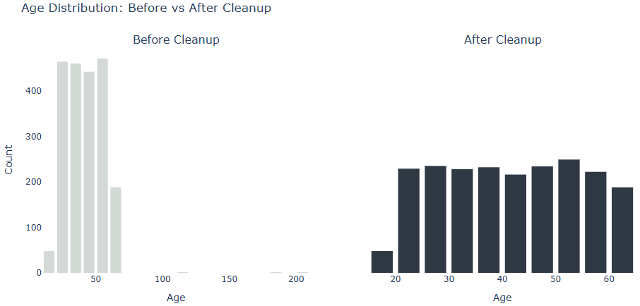

Part 1: ETL Pipeline
This section covers how raw, messy fitness studio member data was cleaned, standardized, and structured into a single reliable dataset ready for analysis and machine learning.
View full notebook on GitHub
The Dataset
This project needed a population of fitness studio members with enough behavioral detail to predict who was likely to cancel. A simulated dataset was created to reflect the realistic messiness of real-world studio data without exposing actual member records.
The dataset captures 2,081 unique members across 9 studio locations in the Denver metro area. Each member record includes demographic information, behavioral signals like weekly class attendance and engagement score, membership details, and a churn flag indicating whether they cancelled.
Data Cleanup
Three specific problems were identified and fixed before any analysis began.
Fix 1: Inconsistent Referral Sources
The referral source field, which tracks how a member first heard about the studio, was filled with typos, formatting differences, and duplicate variations of the same label. This is a common problem in systems where staff enter data manually across multiple locations.
Before cleaning, 28 different values existed for what should have been 8 clean categories. Here is what that looked like:
print(df_members['referral_source'].sort_values().unique())
['Com. Event' 'Community Event' 'CommunityEvent' 'Empl Program'
'Employer Prgrm' 'Employer Program' 'Frend' 'Friend' 'Online Ad'
'OnlineAd' 'Onlne Ad' 'Other' 'Othr' 'Partner Ship' 'Partnership'
'Partnrship' 'Soc. Media' 'Social Media' 'SocialMedia' 'WALK-IN'
'Walk in' 'Walk-in' 'friend' 'frnd' 'onlinead' 'othr' 'soc media'
'walkin']
After standardization, all 28 variations were mapped to 8 clean consistent labels:
referral_mapping = {
'walkin': 'Walk-in', 'Walk in': 'Walk-in', 'WALK-IN': 'Walk-in', 'Walk-in': 'Walk-in',
'friend': 'Friend', 'Friend': 'Friend', 'Frend': 'Friend', 'frnd': 'Friend',
'OnlineAd': 'Online Ad', 'onlinead': 'Online Ad', 'Onlne Ad': 'Online Ad',
'SocialMedia': 'Social Media', 'Soc. Media': 'Social Media', 'soc media': 'Social Media',
'Partnrship': 'Partnership', 'Partner Ship': 'Partnership',
'Employer Prgrm': 'Employer Program', 'Empl Program': 'Employer Program',
'Com. Event': 'Community Event', 'CommunityEvent': 'Community Event',
'othr': 'Other', 'Othr': 'Other'
}
df_members['referral_source'] = df_members['referral_source'].replace(referral_mapping)
print(df_members['referral_source'].sort_values().unique())
['Community Event' 'Employer Program' 'Friend' 'Online Ad' 'Other'
'Partnership' 'Social Media' 'Walk-in']
Fix 2: Impossible Age Values
Three members had age values that were clearly data entry errors: 115, 187, and 209 years old. These were identified and replaced with the average age of all valid members, which came out to 41.6 years.
{kind=link}

Fix 3: Impossible Age Values
Two small but important fixes were made to prepare the data for machine learning:
Binary flags like auto-renew enabled and last attended in 30 days were explicitly converted to 0 and 1 integer values. Machine learning models expect numbers, not true/false or yes/no values.
Categorical fields like gender, referral source, and studio name were converted to consistent string format. This prevents misclassification when the data is passed into modeling tools or loaded into a dashboard.
The Final Dataset
After all cleaning steps were complete, a final check confirmed zero missing values across all 16 columns for all 2,081 members. The cleaned dataset was saved as fitness_studio_data_clean.csv and is the single source of truth for every step that follows.
Optional: Snowflake Integration
For organizations running analytics in the cloud, the cleaned dataset can be loaded directly into Snowflake using a single persistent connection. Credentials are managed securely via a hidden environment file so no sensitive information is ever hardcoded. This step is optional for this project but reflects how a production pipeline would actually be built: clean locally, load to the warehouse, and let dashboards and models read from a single reliable cloud source.
View Snowflake integration code in the full notebook